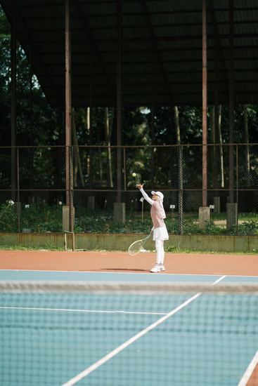

There’s a moment in youth sport that doesn’t get enough attention. It doesn’t happen on the field, the court, or the track. It happens in the car afterwards, seatbelt on, engine running, the game still hanging in the air between parent and child. What gets said in that space matters more than most of us realise. And a lot of the time, with the very best intentions, we get it wrong.
The most emotionally loaded moment in youth sport
Think about what a young person has just been through. They’ve competed in front of people they care about. They’ve tested themselves, physically and emotionally. They may have won, lost, played well, made mistakes, been left on the bench, or scored the winning try. Their nervous system is still buzzing. Their sense of self is right on the surface.
And then they climb into the car with the person whose opinion matters more to them than anyone else’s in the world.
That combination, high emotion plus the person you most want to impress, is why the car ride home carries so much weight. It is a small, closed, inescapable space at the exact moment a child is most raw. Get it right and it becomes a place of safety. Get it wrong, repeatedly, and it slowly teaches a child that the people they love are also the people they have to perform for.

Six words, from three decades of listening
Two long-time American coaches, Bruce Brown and Rob Miller of Proactive Coaching, spent the better part of thirty years asking college athletes the same two questions. The first: “What is your worst memory from playing youth sport?” The answer that came back, over and over, was not a loss, a tough coach, or a missed shot. It was the ride home in the car with my parents.
The second question was the hopeful one. What did these athletes most want to hear from their parents after they played? The answer, again and again, was six words:
“I love to watch you play.”
Not “you should have passed earlier.” Not “why didn’t you shoot?” Not even “you were brilliant today.” Just a simple, unconditional expression of enjoyment, with no judgement attached and no performance review hidden inside a compliment.
It’s worth being honest about what this is. Brown and Miller’s work was an informal survey gathered over a coaching career, not a controlled study, so we should hold the exact wording lightly. But here is the important part: when researchers have tested the underlying idea properly, the science lines up with what those athletes were saying.
What the research actually says
A 2024 systematic review in Frontiers in Psychology pulled together 29 studies covering more than 9,000 young athletes to ask how parents shape a child’s motivation in sport (Gao et al., 2024). The pattern was clear. When children experience pressure and controlling behaviour from parents, it is linked to more anxiety, more burnout, and the kind of motivation that runs on obligation rather than desire. When children experience warmth, reasonable involvement, and autonomy support, the parent backing them while letting them own the experience, it is linked to genuine enjoyment, confidence, and sticking with sport over time.
That word, autonomy, is doing a lot of work. Decades of research on human motivation shows that people commit to things they feel they have chosen, and quietly withdraw from things that feel imposed. A running commentary from the passenger seat, however loving, tips a child’s experience from “mine’’ towards “theirs.’’
The most pointed evidence comes from tennis. In a focus-group study, Camilla Knight and colleagues asked junior players what they actually wanted from their parents around matches (Knight, Boden, & Holt, 2010). The players were clear: they did not want technical or tactical advice. What they valued was comments on their effort and attitude, practical support, and, tellingly, body language that matched the encouraging words. A “well played” delivered through a tight jaw and folded arms fooled no one.

They don’t need a performance review
Here is the thing most of us miss in the moment: your child already knows how they played. They know they missed that shot. They know they got beaten to the ball. They know they went quiet at a crucial moment. They do not need us to tell them, and the research says they do not want us to.
When a parent launches into feedback on the way home, even accurate, well-meant feedback, it carries an unintended message: my attention follows your performance. Do that often enough and sport slowly stops being the child’s and starts being a report card handed in to the people they love. That is exactly the “controlled motivation” the reviews warn about, and it is one of the quiet reasons children drift away from sport in their teens.
The car ride home is not a coaching session. It is a relationship moment. And in that moment a child needs connection, not correction.
Processing is not the same as evaluating
There’s a useful distinction between helping a child process an experience and rushing to evaluate it. Processing sounds like: “That was a tough one, eh?” or “How are you feeling about it?” Evaluating sounds like: “You played well in the first half but dropped off in the second.”
Processing is led by the child. It gives them room to make sense of what happened on their own terms, at their own pace. Evaluating is led by the parent. It drops an outside judgement onto an experience the child is still sitting inside. One builds a thinker. The other builds someone who waits to be told how they did.
When we let the child lead, they often surprise us. They might want to talk about a funny moment with a teammate. They might want to sit in silence. They might just want to know what’s for dinner. All of these are healthy ways of moving through a charged experience. The parent’s job is not to direct the debrief. It is to create the conditions where it can happen on its own.
The New Zealand picture: Balance is Better
None of this is a fringe idea here in Aotearoa. Sport New Zealand’s Balance is Better philosophy, aimed at keeping young people in sport for life, puts parent behaviour right at the centre. They even have a name for the car afterwards: the “mini-van prison.” It captures it perfectly, a child buckled in with no exit while the game gets replayed and the mistakes get named.
Their advice is beautifully simple, and it fits everything above. Ask about the experience, not the scoreboard: “tell me about the race, not the result.” Take the result out of the opening question and you leave room for the parts of sport that actually keep a child coming back, the friendships, the effort, the moments that had nothing to do with winning.
Further reading · Sport NZ
Good, local, evidence-informed guides
- Why are we focusing on parents? Sport New Zealand on the parent’s role in youth sport.
- Supporting your child’s love of sport. Balance is Better guidance, whatever their skill level.
- Balance is Better. The home of youth sport in New Zealand.
What you can do differently
None of this needs a psychology degree. It needs a bit of awareness, a bit of restraint, and a genuine willingness to put the child’s needs ahead of your own in-the-moment urge to help. Here are some things to try.
- Wait. Don’t fill the silence the second the door shuts. Let your child settle. If they want to talk, they will. If they don’t, that is fine, and it is not a snub.
- Ask open, result-free questions. Try “What was the best bit today?” or “What did you enjoy?” rather than “Why didn’t you…?” Open questions invite reflection. Closed ones invite defence.
- Separate your investment from theirs. This is the hard one. You care deeply, and that is right and good. But your disappointment about a result is not your child’s to carry. Find your own outlet, a partner, a friend, a walk, so it doesn’t leak into the car.
- Watch your body language. Children read a sigh, a tight grip on the wheel, or a loaded silence long before they hear the words. The tennis research is blunt about this: the non-verbals have to match (Knight et al., 2010).
- If feedback is genuinely needed, pick a better time. Not in the car, not raw after full-time. Later, calmer, and ideally when the child invites it. Coaching has its place. That place is rarely the passenger seat.
- Say the six words. “I love to watch you play.” After a win. After a loss. After a blinder and after a shocker. Make it the one constant that never depends on the score.
A note on the hard conversations
None of this means going soft, or never talking about the game. Children do want to improve, and sometimes they genuinely want your take. The tennis research even found that where a parent had real expertise and the child trusted it, some advice was welcome (Knight et al., 2010). The issue was almost never whether to talk. It was when, and who led. The car, minutes after the final whistle, with emotions still high, is close to the worst possible time. Let the dust settle. Let the child open the door.
An underserved space
Parenting is one of the most underserved areas in all of sport. We pour resources into coaching education, athlete development and high-performance systems, yet the people with arguably the greatest influence on a young athlete’s experience, their whānau, are too often left without any guidance at all.
It isn’t that parents don’t care. It’s the opposite. Most care so deeply that they over-function, over-analyse and over-talk. The intention is always love. The impact just doesn’t always match it.
Whānau play a critical role in a young athlete’s development, not as coaches or analysts, but as the emotional anchor that makes sport a safe place to grow. When a child knows their parent’s love isn’t riding on the result, they are free to take risks, make mistakes, and fall for the process of getting better. And a surprising amount of that starts with what happens in the car on the way home.
Frequently asked questions
What should I say to my child after a game?
Keep it simple and unconditional: “I love to watch you play.” Then let your child lead. If they want to talk, follow their thread. If they want quiet, give it. The car ride home is a relationship moment, not a debrief.
Why does the car ride home matter so much?
It is one of the most emotionally loaded moments in youth sport: a child steps straight from competing into a small space with the person whose opinion they value most. Research links parental pressure here to anxiety and burnout, and warm, autonomy-supportive support to enjoyment and staying in sport (Gao et al., 2024).
Should I give my child feedback after a match?
Not in the car, and not straight after the game. Junior athletes report that they generally don’t want technical or tactical advice from parents around competition; they value comments on effort and attitude, and body language that matches (Knight et al., 2010). If feedback is needed, wait for a calmer time and let the child invite it.
What is the “mini-van prison”?
It is a term from Sport New Zealand’s Balance is Better for the car after a match, where a child feels trapped while the game gets replayed and the mistakes get named. Their fix: ask about the experience, not the result.
If you’re a parent finding your way through youth sport, you’re not alone, and you don’t have to get it perfect. Our whānau and parent support programmes give families practical, evidence-based tools for backing young athletes well. If you’d like to talk it through, come and have a kōrero.
References
Brown, B. E., & Miller, R. Proactive Coaching LLC. Informal athlete surveys on parental support and the “car ride home”. proactivecoaching.info
Gao, Z., Chee, C. S., Norjali Wazir, M. R. W., Wang, J., Zheng, X., & Wang, T. (2024). The role of parents in the motivation of young athletes: a systematic review. Frontiers in Psychology, 14, 1291711. https://doi.org/10.3389/fpsyg.2023.1291711
Knight, C. J., Boden, C. M., & Holt, N. L. (2010). Junior tennis players’ preferences for parental behaviors. Journal of Applied Sport Psychology, 22(4), 377–391. https://doi.org/10.1080/10413200.2010.495324
Sport New Zealand – Ihi Aotearoa. Balance is Better. balanceisbetter.org.nz